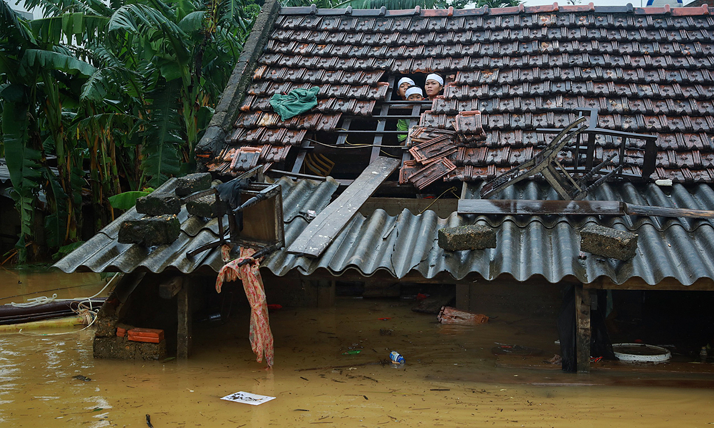

Vietnam can be considered one of the countries in the world exposed to global warming effects, due to its extensive coastline from north to south with enormous deltas and floodplains, typhoon-prone location, and significantly impoverished population.
These recent years, Vietnam has been suffering from many terrible typhoons, as intense storms or drought seasons could wipe out the farmers' crop yield, and great impact on rural incomes, food supply, and to export products. The poor will be even more miserable due to the high risks that make them have to migrate inland or toward large cities nearby with a low chance of having any job.